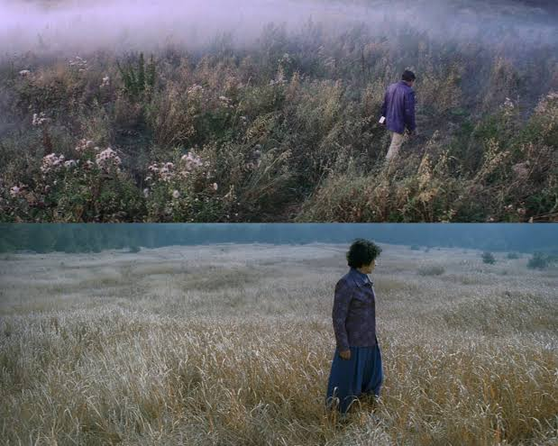

ComfyUI · Graphic novel · 2026
AELITA: PuLID vs Flux Kontext for graphic novel storyboarding
Building an AI storyboard pipeline for a graphic novel adaptation of Alexei Tolstoy's Soviet sci-fi novel — and what the two main identity-preservation approaches actually do.

Tarkovsky's visual language as a reference point: flat, saturated fields; figures dwarfed by environment. The AELITA graphic novel operates in the same register — Soviet landscape, retro-futurist technology, illustrated style that no AI model naturally preserves.
AELITA is a graphic novel adaptation of Alexei Tolstoy's 1923 Soviet science fiction novel — built entirely in ComfyUI on RunPod, using Flux-based models. The cast includes two human protagonists (Los and Gusev) and blue-skinned Martian characters with strict appearance rules across all 8 panels.
The central architectural question: which identity-preservation mechanism produces consistent characters across panels — PuLID (face biometric lock) or Flux Kontext (reference image conditioning)? The answer turned out to be neither simple nor symmetric.
The architecture that worked for AELITA: Flux Kontext fed with panel crops (not masked character extractions). No PuLID. No ControlNet depth. Prompts generated by Claude Sonnet API applying cinematographic rules — camera angle, LEFT:/RIGHT: spatial anchoring, scale anchoring, environment density minimums for wide shots. One 69-node graph for 8 outputs, JSON built programmatically by a dedicated generator script.
The open empirical question: a hybrid pipeline — PuLID vault generation on RunPod feeding Kontext Max per panel — is pending a 10-panel test. The hypothesis: PuLID generates photorealistic character reference frames; Kontext uses those frames as conditioning anchors while accepting a stronger style LoRA. If the hypothesis holds, illustrated output with consistent identity becomes achievable.
COMPARISON
| DIMENSION | PuLID | Flux Kontext |
|---|---|---|
| Identity mechanism | Biometric face lock | Full-frame visual conditioning |
| Style preservation | None — overwrites with photorealistic output | None — same photorealistic register |
| Character masking | Required — one node per face | Not needed — panel crops work |
| Best for | Photorealistic film storyboard | Illustrated graphic novel (with style LoRA) |
OPEN SOURCE · TOOL
ComfyUI — node-based Stable Diffusion UI
github.com/comfyanonymous/ComfyUI